| # |
BID |
Beatmap Info |
Mods |
BPM |
Hit Length |
Max Combo |
CS |
AR |
OD |
Notes |
| 1 |
4553942 |
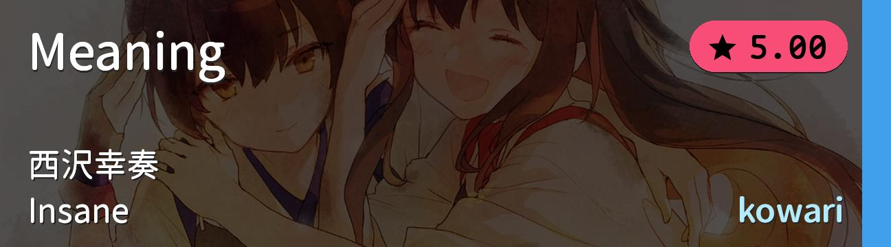 |
NM |
190.0 |
2:40 |
931 |
4.0 |
9.0 |
7.5 |
跳 |
| 2 |
4402322 |
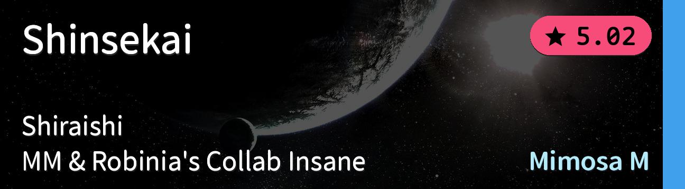 |
NM |
193.0 |
1:28 |
687 |
3.6 |
9.0 |
8.0 |
串 |
| 3 |
2144228 |
![LiSA - Gurenge (Crissa) [Insane]](./模拟图池Mini（进阶）.covers/3-2144228.jpg) |
NM |
135.0 |
3:38 |
1393 |
4.0 |
9.0 |
8.6 |
alt |
| 4 |
4179781 |
![DJ Raisei - T.R.A.P. (PaRaDogi) [0pp's Insane]](./模拟图池Mini（进阶）.covers/4-4179781.jpg) |
NM |
203.0 |
1:51 |
679 |
4.0 |
9.0 |
8.0 |
tech |
| 5 |
36055 |
![Brandy - Cross Time !! (buraimaster1234) [Ultra]](./模拟图池Mini（进阶）.covers/5-36055.jpg) |
NM |
160.0 |
2:07 |
738 |
4.0 |
8.0 |
8.0 |
TD选的老图 |
| 6 |
946685 |
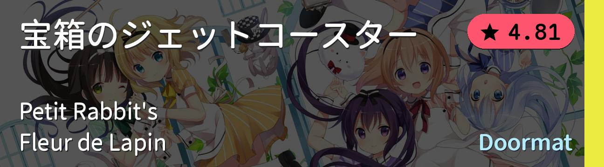 |
HD |
158.0 |
3:15 |
1085 |
4.0 |
9.0 |
8.0 |
点兔给萌新玩再合适不过了 |
| 7 |
3335524 |
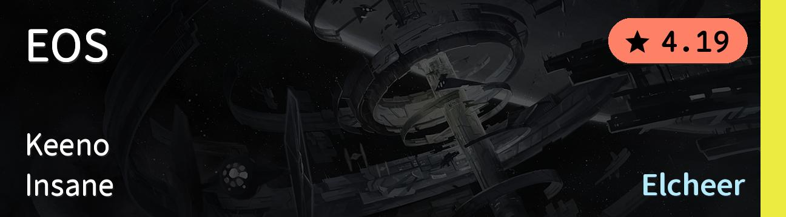 |
HD |
174.0 |
2:34 |
823 |
4.0 |
8.0 |
7.0 |
AR8 基本功 |
| 8 |
3992837 |
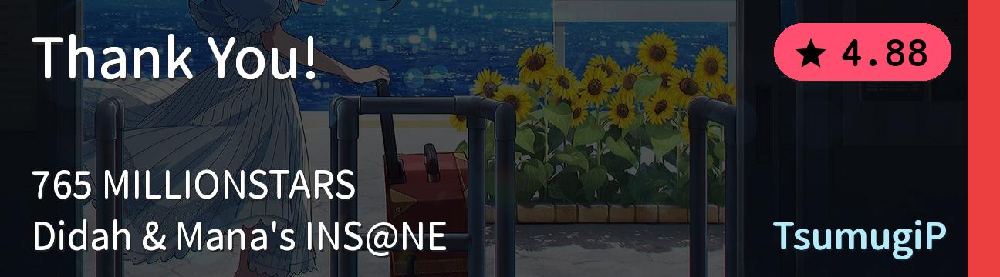 |
HR |
177.0 |
4:19 |
1361 |
4.94 |
10.0 |
10.0 |
确认过眼神，是TD打不动的东西 |
| 9 |
4714325 |
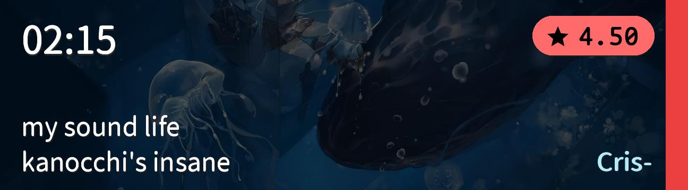 |
HR |
145.0 |
2:12 |
615 |
6.5 |
9.8 |
9.8 |
是我先做的课题TAT |
| 10 |
397535 |
|
DT |
192.0 |
2:14 |
941 |
4.0 |
9.67 |
9.11 |
别沮丧这个真能打 |
| 11 |
4086707 |
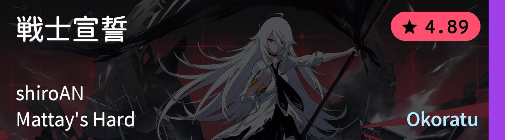 |
DT |
270.0 |
2:19 |
1093 |
3.6 |
9.67 |
8.78 |
唬人的BPM别怕 |
| 12 |
4389104 |
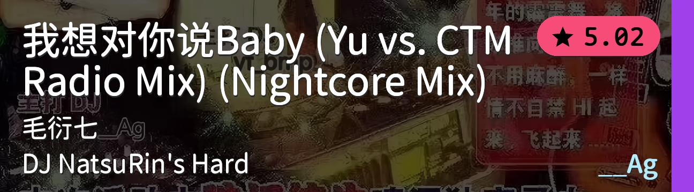 |
DT |
262.5 |
1:48 |
924 |
4.0 |
9.67 |
9.11 |
就和你说DT不会难的吧 |
| 13 |
1602634 |
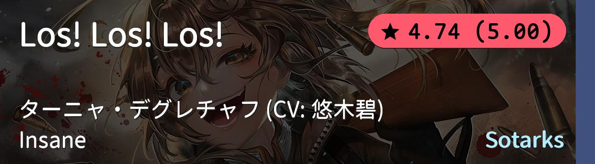 |
FM |
240.0 |
3:24 |
1446 |
3.2 |
9.0 |
8.0 |
改完之后BPM+60，FM不放水了 |
| 14 |
3411754 |
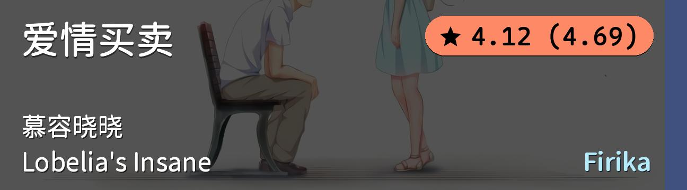 |
FM |
95.0 |
3:06 |
889 |
5.0 |
8.0 |
8.0 |
难飞了 |
| 15 |
733678 |
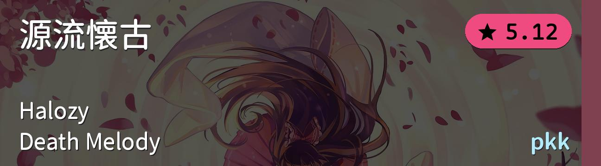 |
TB |
173.0 |
5:00 |
1618 |
4.0 |
9.0 |
8.0 |
基本功硬不硬就看这个了 |